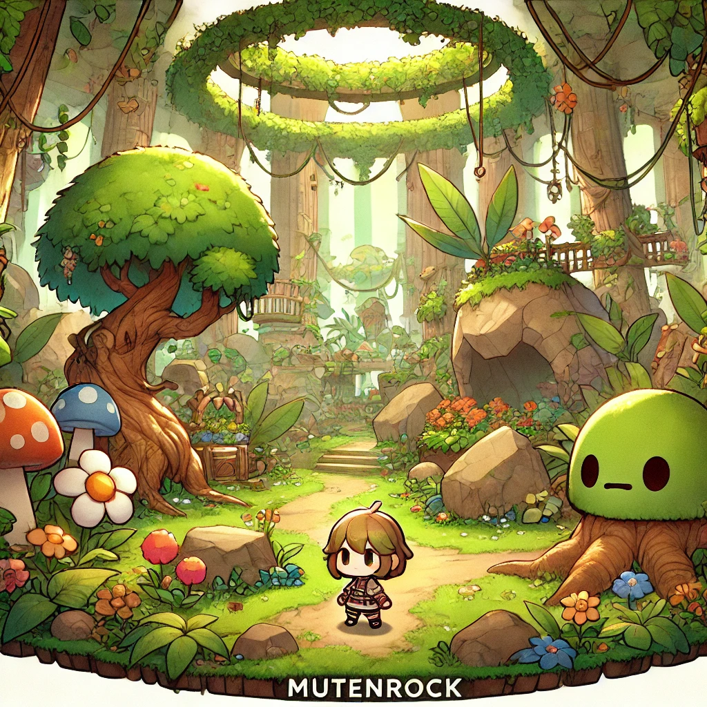

Rapport d'import - Desktop BZH - 2026-07-06
Source et copie
- Source analysee en lecture seule :
C:\Users\pierr\Desktop\BZH - Copie de travail dans le repo :
imports/2026-07-06-desktop-bzh/ - Etat du dossier source : non modifie
Volume
- Fichiers copies : 1 657
- Dossiers copies : 133
- Volume total : 2 408,4 Mo
- Fichiers deja presents dans
assets/


 ,
, media/


 ou
ou archives/


.png)
.png)
.png) : 231
: 231 - Volume deja present : 273,06 Mo
- Fichiers nouveaux : 1 426
- Volume nouveau : 2 135,34 Mo
Politique videos
- Les videos du lot ne doivent pas etre analysees en contenu.
- Elles sont seulement referencees par chemin et taille dans
2026-07-06-desktop-bzh-videos.csv. - L'index contient 160 videos au total, dont 156 nouvelles par rapport aux medias deja classes.
- Aucune duree, miniature, transcription ou extraction de contenu video n'a ete calculee.
Nouveaux fichiers par famille
| Famille | Fichiers | Volume |
|---|---|---|
BZH_RESS | 757 | 1 561,53 Mo |
BZH_TCG_Images | 186 | 390,58 Mo |
BZH_CHRONICLES | 73 | 67,23 Mo |
LOL_TEAM_STATS | 360 | 38,96 Mo |
Hermine | 13 | 24,60 Mo |
bzh_chr_album_wip | 20 | 21,34 Mo |
RTT | 5 | 12,59 Mo |
LEME | 4 | 7,30 Mo |
| fichiers PNG libres racine | 4 | 10,59 Mo |
BZH_DONE restant | 2 | 0,01 Mo |
desktop.ini racine | 1 | 0 Mo |
Nouveaux fichiers par type
| Type | Fichiers | Volume |
|---|---|---|
.mp4 | 156 | 939,87 Mo |
.png | 467 | 734,96 Mo |
.wav | 4 | 134,36 Mo |
.webp | 568 | 126,65 Mo |
.mp3 | 20 | 98,35 Mo |
.pdn | 5 | 31,36 Mo |
.téléchargement | 41 | 30,87 Mo |
.jpg | 62 | 21,80 Mo |
.gif | 3 | 7,70 Mo |
| sans extension | 18 | 4,86 Mo |
.html | 41 | 1,85 Mo |
.jpeg | 2 | 1,18 Mo |
.css | 21 | 0,62 Mo |
.txt | 1 | 0,49 Mo |
.db | 7 | 0,31 Mo |
.json | 4 | 0,05 Mo |
.docx | 1 | 0,04 Mo |
.csv | 3 | 0 Mo |
.ini | 1 | 0 Mo |
.lnk | 1 | 0 Mo |
Risques et decisions de tri
BZH_RESS\Montage\BZH ANTHEM 2.mp4fait 122,88 Mo : il depasse la limite GitHub standard de 100 Mo et ne doit pas etre commite en Git classique.- Git LFS est installe localement, mais le repo n'a pas encore de
.gitattributesLFS. - Les videos ont d'abord ete indexees reference-only, sans analyse de contenu ni promotion automatique dans la galerie.
- Les 19 videos residuelles encore presentes le 2026-07-08 ont ensuite ete promues comme references de hub sur demande, en conservant une logique par noms de dossiers source.
- Les fichiers
.téléchargement, fichiers sans extension des exports web,.db,.iniet.lnkdoivent rester hors assets finaux. LOL_TEAM_STATSressemble a une archive web/statistique : a conserver comme archive documentaire ou export web, pas comme media final de galerie.BZH_TCG_Imagesa ete traite comme lot TCG dedie.- Les 231 doublons exacts correspondent surtout aux lots deja classes dans
assets/, media/ et archives/.
Traitement TCG realise
- 66 visuels de cartes BZH01 classes dans
assets/cards/bzh01/cards/ .
. - 97 visuels de cartes BZH02 classes dans
assets/cards/bzh02/cards/


 .
. - 8 assets communs de carte classes dans
assets/cards/shared/


 .
. - 14 visuels de reference TCG classes dans
assets/cards/bzh02/reference/


 et
et assets/cards/reference/


 .
. - 1 source Paint.NET conservee dans
archives/sources/tcg/. - 1 doublon exact ignore :
ChatGPT Image 20 juin 2025, 03_20_51.png, deja present sousassets/cards/bzh01/bzhcard_bzh01_pack-layout_v01.png.
Traitement audio realise
- 16 pistes MP3 classees dans
media/audio/tracks/. - 4 previews MP3 classees dans
media/audio/previews/site-song/. - 4 masters WAV conserves dans
media/audio/masters/. - Aucun fichier audio ne depasse 100 Mo.
- Aucun doublon exact detecte avec les medias deja suivis.
Traitement audio complementaire Sniky / Dernier souffle
- 22 fichiers MP3 classes dans
media/audio/tracks/. - Volume classe : 87,29 Mo.
- 5 variantes
mmk sniky 2classees dansmedia/audio/tracks/sniky-the-frager-mix/. - 17 pistes et variantes Dernier souffle / Echo Vide / Fantome de Chair classees dans
media/audio/tracks/dernier-souffle/. - Aucun fichier ne depasse 100 Mo.
- Aucun doublon exact detecte avec l'audio deja classe avant promotion.
- Les dossiers sources
Sniky The Frager Mix/etDernier souffle/ont ete vides dans le sas local apres classement.
Nettoyage du sas realise
imports/2026-07-06-desktop-bzh/BZH_TCG_Images/supprime du sas local apres classement.- Les fichiers audio traites ont ete retires de
imports/2026-07-06-desktop-bzh/BZH_RESS/Son/. - Les fichiers audio des dossiers
Sniky The Frager Mix/etDernier souffle/ont ete retires du sas local apres classement. - Les dossiers vides du sas local ont ete supprimes.
- Les videos de
BZH_RESS\Sonont ete promues comme references video lors du traitement final du sas. - Le reste du lot Desktop BZH a ete traite lors des passes suivantes, jusqu'au retrait du dossier de lot residuel.
Traitement LoL Team Stats realise
- 360 fichiers archives dans
archives/web/lol-team-stats/raw/


 .
. - Les pages HTML, CSV, JSON, CSS, images et fichiers telecharges sont conserves comme snapshot brut de statistiques LoL.
- Le lot est mis de cote : pas de lien direct depuis le wiki, pas de navigation publique dediee, pas de promotion dans la galerie media.
- Aucun doublon exact detecte avec les fichiers deja suivis.
- Le dossier source
LOL_TEAM_STATS/a ete retire du sas local apres verification bit a bit contre l'archive brute.
Traitement visuels courts realise
- Perimetre traite : dossiers
Hermine,LEME,RTT,bzh_chr_album_wipet visuels PNG racine. - 46 fichiers visuels examines.
- 42 visuels uniques classes dans
assets/logos/


 et
et media/visual/


 .
. - Aucun doublon exact detecte avec les medias deja suivis avant promotion.
- 4 doublons exacts internes conserves dans
archives/import-duplicates/2026-07-06-desktop-bzh/. - 2 metadonnees Windows conservees dans
archives/import-metadata/2026-07-06/imports/2026-07-06-desktop-bzh/.
Destinations :
assets/logos/aligax/ — 1 logo typographique Aligax.media/visual/references/hermine-logos/


 — 13 references Hermine / BZH Power.
— 13 references Hermine / BZH Power.media/visual/references/leme/


 — 4 references LEME.
— 4 references LEME.media/visual/covers/rtt/


 — 5 covers RTT / Pontivy.
— 5 covers RTT / Pontivy.media/visual/covers/bzh-chronicles-album-wip/ — visuels album WIP BZH Chronicles.media/visual/covers/bzh-jazzy/

 — visuels BZH Jazzy.
— visuels BZH Jazzy.media/visual/covers/ — poster Cyber Legends et miniature Eclats.media/visual/merch/


 — mockup apparel BZH Power.
— mockup apparel BZH Power.
Doublons exacts internes :
image (1).pngest une copie exacte deimage.png, promu commemedia/visual/merch/bzhpower_esport-apparel_lineup_v03.png .
.549254484567813.jpgest une copie exacte dealbum_cover_1.jpg, promu dansmedia/visual/covers/bzh-chronicles-album-wip/album_wip/.ChatGPT Image 15 avr. 2025, 00_32_36.pngest une copie exacte deNuit pluvieuse au port.png, promu dansmedia/visual/covers/bzh-jazzy/.ChatGPT Image 14 avr. 2025, 23_28_48.pngest une copie exacte deOmbres sur la 9e Avenue.png, promu dansmedia/visual/covers/bzh-jazzy/.
Traitement BZH Chronicles realise
- Perimetre traite :
imports/2026-07-06-desktop-bzh/BZH_CHRONICLES/. - 151 fichiers examines, sans video.
- 116 fichiers sont des doublons exacts deja suivis dans
assets/, media/ ou archives/. - Ces 116 doublons ne sont pas recopies ; ils sont indexes dans
archives/import-reports/2026-07-06-desktop-bzh-bzh-chronicles-duplicates.csv, puis retires du sas final. - 35 fichiers nouveaux traites : 27 visuels ou assets classes, 1 source Paint.NET conservee, 2 metadonnees Windows conservees, 5 copies doublons exactes internes archivees.
Destinations :
assets/cards/legacy/old-card/.png)
.png)
.png)
.png)
.png)
.png) — 25 visuels de cartes legacy.
— 25 visuels de cartes legacy.media/visual/references/bzh-chronicles/ — 1 reference visuelle BZH Chronicles.
— 1 reference visuelle BZH Chronicles.media/visual/references/bzh-chronicles-montage/ — 1 montage photo BZH Power.
— 1 montage photo BZH Power.archives/sources/webtoon/— 1 source Paint.NET Webtoon.archives/import-duplicates/2026-07-06-desktop-bzh/BZH_CHRONICLES/old_card/.png)
 — 5 copies exactes internes.
— 5 copies exactes internes.archives/import-metadata/2026-07-06/imports/2026-07-06-desktop-bzh/BZH_CHRONICLES/— 2 metadonnees Windows.
Doublons exacts internes :
old_card/1 (3).pngest une copie exacte deold_card/Floating Monastery.png, promu dansassets/cards/legacy/old-card/.old_card/1 (62).pngest une copie exacte deold_card/Aligax _ Spirit _ The Shield and the Aim.png, promu dansassets/cards/legacy/old-card/.old_card/1 (45).pngest une copie exacte deold_card/Secret of the Maelstrom.png, promu dansassets/cards/legacy/old-card/.old_card/Thorn Lurker.pngest une copie exacte deold_card/Pulse Rifle.png, promu dansassets/cards/legacy/old-card/.old_card/1 (13).pngest une copie exacte deold_card/Titan _ Guardian Beast.png, promu dansassets/cards/legacy/old-card/.
Traitement BZH_RESS visuels courts realise
- Perimetre traite :
emote/,sticker/,poster/,wallpaper/hors video,chibiii plush/,chronicles_profil/etgpt_soirée_trio/. - 81 fichiers non video examines.
- 7 fichiers sont des doublons exacts deja suivis.
- Les doublons deja suivis sont indexes dans
archives/import-reports/2026-07-06-desktop-bzh-bzh-ress-visuals-duplicates.csv. - 74 fichiers nouveaux traites : 66 contenus promus ou archives, 4 metadonnees Windows conservees, 4 copies doublons exactes internes archivees.
- La video
BZH_RESS/wallpaper/732cc349-54b2-4a49-92f4-01cded1f0342.mp4a ete promue comme reference video lors du traitement final.
Destinations :
media/visual/social/emotes/bzh-ress/


 — 23 emotes et avatars.
— 23 emotes et avatars.media/visual/social/stickers/bzh-ress/


 — 4 stickers.
— 4 stickers.media/visual/covers/bzh-ress-posters/


 — 6 posters.
— 6 posters.media/visual/wallpapers/bzh-ress/


 — 16 wallpapers.
— 16 wallpapers.media/visual/merch/tapestries/bzh-ress/


 — 6 tentures.
— 6 tentures.media/visual/merch/plush/ — 1 reference plush.
— 1 reference plush.media/visual/merch/apparel/ — 1 reference apparel.media/visual/references/gpt-soiree-trio/— 8 references de scene.archives/html/bzhpw-lore/— 1 fiche HTML Sniky complementaire.archives/import-duplicates/2026-07-06-desktop-bzh/BZH_RESS/


.webp)

 — 4 copies exactes internes.
— 4 copies exactes internes.archives/import-metadata/2026-07-06/imports/2026-07-06-desktop-bzh/BZH_RESS/— 4 metadonnees Windows.
Trace de renommage :
- Les fichiers a noms tres longs ont ete renommes en noms courts par famille.
- Le mapping source/destination est conserve dans
archives/import-reports/2026-07-06-desktop-bzh-bzh-ress-visuals-moves.csv.
Traitement BZH_RESS racine realise
- Perimetre traite : fichiers poses directement dans
imports/2026-07-06-desktop-bzh/BZH_RESS/, hors video. - 12 fichiers non video examines.
- 4 fichiers sont des doublons exacts deja suivis.
- Les doublons deja suivis sont indexes dans
archives/import-reports/2026-07-06-desktop-bzh-bzh-ress-root-duplicates.csv. - 8 fichiers nouveaux traites : 5 visuels classes, 2 documents conserves, 1 CSV de metadata conserve.
- La video
BZH_RESS/tmp1uphl2jq.mp4reste referencee dans l'index video reference-only ; elle n'est plus presente dans le sas local au controle de reprise du 2026-07-08.
Destinations :
media/visual/references/steam-escape-game/
 — 2 photos de reference.
— 2 photos de reference.media/visual/references/bzh-ress/ — 1 reference personnage/loups.
— 1 reference personnage/loups.media/visual/covers/bzh-ress-posters/ — 1 poster Hall of Playtime.assets/site/frames/ — 1 frame/contour.
— 1 frame/contour.archives/documents/bzhpw-lore/— 2 documents texte/source.archives/import-metadata/2026-07-06/imports/2026-07-06-desktop-bzh/BZH_RESS/— 1 CSV de metadata.
Trace de renommage :
- Le mapping source/destination est conserve dans
archives/import-reports/2026-07-06-desktop-bzh-bzh-ress-root-moves.csv.
Traitement BZH_RESS Montage images realise
- Perimetre traite : images fixes dans
imports/2026-07-06-desktop-bzh/BZH_RESS/Montage/. - 43 fichiers images examines.
- 42 images promues dans
media/visual/references/


 .
. - 1 copie doublon exacte interne conservee dans
archives/import-duplicates/2026-07-06-desktop-bzh/BZH_RESS/Montage/. - Aucun doublon exact detecte avec les fichiers deja suivis avant promotion.
- Les 136 videos
.mp4du dossierMontage/sont conservees dans l'index video reference-only ; le dossierMontage/n'est plus present dans le sas local au controle de publication du 2026-07-08.
Destinations :
media/visual/references/bzh-dancers/


 — 34 references chanteurs/danseurs et reworks.
— 34 references chanteurs/danseurs et reworks.media/visual/references/bzh-trio-footage/


 — 6 images de reference trio/anime opening.
— 6 images de reference trio/anime opening.media/visual/references/bzh-ress-montage/
 — 2 images racine du dossier Montage.
— 2 images racine du dossier Montage.archives/import-duplicates/2026-07-06-desktop-bzh/BZH_RESS/Montage/ — 1 copie exacte interne.
Trace de renommage :
- Le mapping source/destination est conserve dans
archives/import-reports/2026-07-06-desktop-bzh-bzh-ress-montage-moves.csv.
Traitement bzhpwimage petits lots realise
- Perimetre traite :
bzhpwimage/bzh_pw_album_cover/,bzhpwimage/bzh_pw_rd_art/et les 2 coloriages racine debzhpwimage/. - 18 fichiers examines.
- 17 visuels promus dans
media/visual/. - 1 fichier est un doublon exact deja suivi.
- Le doublon deja suivi est indexe dans
archives/import-reports/2026-07-06-desktop-bzh-bzhpwimage-small-duplicates.csv.
Destinations :
media/visual/covers/bzh-pw-album-cover/


 — 9 covers et teasers album.
— 9 covers et teasers album.media/visual/references/bzh-pw-rd-art/split/


 — 6 recherches de style MutenRock.
— 6 recherches de style MutenRock.media/visual/references/coloring-pages/
 — 2 coloriages Aligax et MutenRock.
— 2 coloriages Aligax et MutenRock.
Trace de renommage :
- Le mapping source/destination est conserve dans
archives/import-reports/2026-07-06-desktop-bzh-bzhpwimage-small-moves.csv.
Traitement bzhpwimage logos realise
- Perimetre traite :
bzhpwimage/bzh_chronicle_logo/. - 176 fichiers examines.
- 173 visuels logo promus dans
assets/logos/bzh-chronicles/ .
. - 1 source Paint.NET conservee dans
archives/sources/logos/bzh-chronicles/. - 2 fichiers sont des doublons exacts deja suivis.
- Les doublons deja suivis sont indexes dans
archives/import-reports/2026-07-06-desktop-bzh-bzhpwimage-logo-duplicates.csv.
Destinations :
assets/logos/bzh-chronicles/title/


 — 144 variantes de titre BZH Chronicles.
— 144 variantes de titre BZH Chronicles.assets/logos/bzh-chronicles/dominion/


 — 25 variantes Dominion.
— 25 variantes Dominion.assets/logos/bzh-chronicles/wip/

 — 3 variantes WIP.
— 3 variantes WIP.assets/logos/bzh-chronicles/ — 1 variante logo detouree.archives/sources/logos/bzh-chronicles/— 1 source Paint.NET.
Trace de renommage :
- Le mapping source/destination est conserve dans
archives/import-reports/2026-07-06-desktop-bzh-bzhpwimage-logo-moves.csv.
Traitement bzhpwimage immmaaageg realise
- Perimetre traite :
bzhpwimage/immmaaageg/. - 47 fichiers examines.
- 42 references visuelles promues dans
media/visual/references/immmaaageg/


 .
. - 1 source Paint.NET conservee dans
archives/sources/bzhpwimage/. - 1 copie doublon exacte interne conservee dans
archives/import-duplicates/2026-07-06-desktop-bzh/BZH_RESS/bzhpwimage/immmaaageg/. - 3 fichiers sont des doublons exacts deja suivis.
- Les doublons deja suivis sont indexes dans
archives/import-reports/2026-07-06-desktop-bzh-bzhpwimage-immmaaageg-duplicates.csv.
Trace de renommage :
- Le mapping source/destination est conserve dans
archives/import-reports/2026-07-06-desktop-bzh-bzhpwimage-immmaaageg-moves.csv.
Traitement bzhpwimage artwork realise
- Perimetre traite : fichiers non video de
bzhpwimage/bzh_pw_artwork/. - 217 fichiers non video examines ; 3 videos
.mp4promues comme references video lors du traitement final. - 204 visuels promus dans
media/visual/. - 1 source Paint.NET conservee dans
archives/sources/bzhpwimage/. - 1 raccourci Windows conserve dans
archives/import-metadata/2026-07-06/imports/2026-07-06-desktop-bzh/BZH_RESS/bzhpwimage/bzh_pw_artwork/. - 3 copies doublons exactes internes conservees dans
archives/import-duplicates/2026-07-06-desktop-bzh/BZH_RESS/bzhpwimage/bzh_pw_artwork/. - 8 fichiers sont des doublons exacts deja suivis.
- Les doublons deja suivis sont indexes dans
archives/import-reports/2026-07-06-desktop-bzh-bzhpwimage-artwork-duplicates.csv.
Destinations :
media/visual/references/bzh-pw-art-set/


 — 44 references art set.
— 44 references art set.media/visual/references/bzh-pw-base/

 — 3 references base.
— 3 references base.media/visual/wallpapers/bzh-pw-city/


 — 10 wallpapers city.
— 10 wallpapers city.media/visual/references/bzh-pw-daddy-chronicles/


 — 6 references Daddy Chronicles.
— 6 references Daddy Chronicles.media/visual/references/bzh-pw-le-code/


 — 5 references Le Code.
— 5 references Le Code.media/visual/references/bzh-pw-lol-chronicles/


 — 41 references LoL Chronicles.
— 41 references LoL Chronicles.media/visual/merch/bzh-pw-artwork/ — 31 visuels merch.
— 31 visuels merch.media/visual/covers/bzh-pw-song-cover/


 — 26 covers de morceaux.
— 26 covers de morceaux.media/visual/wallpapers/bzh-pw-aligax/


 — 26 wallpapers Aligax.
— 26 wallpapers Aligax.media/visual/wallpapers/bzh-pw-mutenrock/


 — 6 wallpapers MutenRock.
— 6 wallpapers MutenRock.media/visual/webtoon/bzh-pw-webtoon/


 — 4 references webtoon.
— 4 references webtoon.media/visual/references/bzh-pw-wuxia/
 — 2 references Wuxia.
— 2 references Wuxia.
Trace de renommage :
- Le mapping source/destination est conserve dans
archives/import-reports/2026-07-06-desktop-bzh-bzhpwimage-artwork-moves.csv.
Traitement final du sas
- 520 fichiers residuels ont ete traites apres re-mesure.
LOL_TEAM_STATS/: 360 fichiers retires du sas apres verification bit a bit contrearchives/web/lol-team-stats/raw/.BZH_CHRONICLES/: 116 fichiers retires du sas ; tous les chemins etaient indexes dans2026-07-06-desktop-bzh-bzh-chronicles-duplicates.csv.BZH_RESS/non video : 25 fichiers retires du sas ; tous les chemins etaient indexes dans les CSV de doublons BZH_RESS / bzhpwimage.BZH_RESS/videos : 19 videos.mp4, 65 011 251 octets, promues comme references dansmedia/video/references/desktop-bzh/.- Les videos ont ete classees par noms de dossiers source, sans analyse de contenu, transcription, miniature ni extraction.
- Le mapping source/destination est conserve dans
archives/import-reports/2026-07-06-desktop-bzh-video-promotions.csv. - La synthese machine-readable finale est conservee dans
archives/import-reports/2026-07-06-desktop-bzh-sas-residuals.csv. - Le dossier
imports/2026-07-06-desktop-bzh/a ete vide puis retire ;imports/ne contient plus que son README source et son HTML genere.
Point hub
- Page de synthese :
docs/archives/import-desktop-bzh.md - Galerie media :
media/gallery/index.html